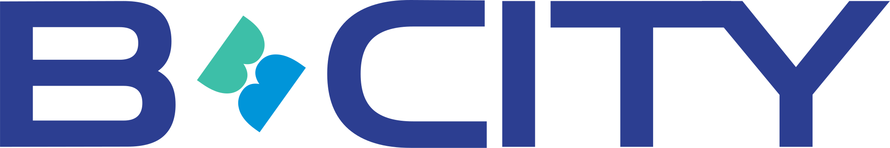
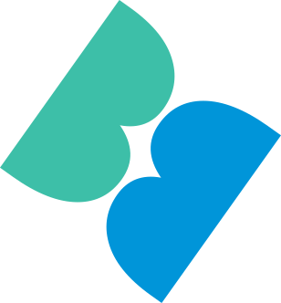

02CITY · 도시소개
브랜드
BRAND NAME브랜드 네임
도시와 바이오가 하나가 되는 곳
바이오와 도시 인프라가 만나 새로운 가치를 만듭니다

B-CITY의 심볼은 두 개의 알파벳 “B” 구조를 기반으로 설계되었습니다. 좌우의 형태는 서로 독립된 산업과 기능을 의미하며, 중앙의 유기적인 연결 구조를 통해 하나의 미래 도시 시스템으로 통합됩니다.
-
01Double BBio + Big Data 구조
두 개의 B 구조는 Bio와 Big Data처럼 서로 다른 산업과 기능이 연결되는 미래 도시 시스템을 상징합니다. 각 구조는 독립적으로 존재하지만 중앙 흐름을 통해 하나의 생태계로 연결됩니다.
-
02DNA Helix생명과 데이터 흐름의 상징
중앙의 연결 구조는 DNA Double Helix의 흐름을 추상화한 네거티브 공간입니다. 이는 바이오 기술과 데이터 기반 산업이 끊임없이 연결되고 순환하는 도시 구조를 의미합니다. 직접적인 DNA 표현이 아닌 브랜드 심볼 내부에 녹아든 “Bio Flow” 개념으로 구현되었습니다.
-
03Connected Core도시 인프라의 연결 허브
심볼의 곡선 흐름은 춘천의 자연 환경과 미래 산업 구조가 연결되는 도시 비전을 상징합니다. 유기적인 흐름은 B-CITY의 핵심 철학인 “Connected Innovation City”를 시각화합니다.

BRAND LOGOTYPE브랜드 로고타입
전용 서체로 다시 그린 B·CITY 워드마크
기존 서체를 가져다 쓰지 않고, 브랜드 전용으로 수정한 기하학적 산세리프입니다
- 비율
- W : H = 6.0 : 1
- 서체
- Custom Geometric Sans · Modified exclusively for B·CITY
- 구성
- B(Letter) + Symbol(Mint × Azure) + CITY
사용 규칙 USAGE RULES
- 최소 크기
- 120px / 32mm 이상
- 여백
- 심볼 높이의 1배 여백 확보
- 색상
- 3색 컬러 / 단색 네이비 / 흰색 반전만 허용
심볼 마크 SYMBOL MARK

두 개의 레이어가 교차하는 추상 심볼 — 민트(#3DBFA8)와 애저(#0095D9)의 교차점이 혁신과 연결을 상징합니다.
레터 애너토미 LETTER ANATOMY
-
듀얼 볼 구조(Double Bowl)
상하 비율 차이로
역동성과 안정감 동시 표현 -
오픈 카운터(Open Counter)
넓은 개구부로
개방성 · 포용성 상징 -
스템 전용(Stem Only)
세리프 없이
수직 강조, 도시의 기둥 -
수평 확장형(Wide Crossbar)
수평 확장으로
도시 확장성 표현 -
대각 삼각 구조(Diagonal Arms)
상부 수렴 구조로
통합과 연결성 표현
로고 변형 LOGO VARIATIONS
- 01Main기본 · 공식 매체
- 02Mono Navy단색 인쇄 · 간결한 상황
- 03Mono Black팩스 · 문서 흑백 출력
- 04Reverse White어두운 배경 · 야간 사이니지
- 05On Vibrant Blue강조 컬러 배경
- 06Symbol Only파비콘 · 작은 매체 · 패턴
BRAND COLOR브랜드 컬러
3색의 조화, 하나의 정체성
B-CITY의 Indigo는 도시의 무게중심, Mint는 생명의 흐름, Azure는 데이터의 광채. 세 가지 색은 각자 다른 의미를 품으면서도 하나의 정체성으로 작동합니다
-
Indigo인디고
- HEX
- #2C3E91
- RGB
- 44 · 62 · 145
- CMYK
- 100 · 85 · 0 · 15
- PMS
- PANTONE 2735 C
신뢰 · 안정 · 깊이 · 지속성깊고 단단한 인디고는 도시의 무게중심입니다. 흔들림 없는 사업 추진력, 신뢰할 수 있는 파트너십, 그리고 오래도록 이어질 미래 도시의 안정감을 상징합니다.
-
Mint민트
- HEX
- #3DBFA8
- RGB
- 61 · 191 · 168
- CMYK
- 70 · 0 · 40 · 0
- PMS
- PANTONE 7472 C
바이오 · 생명 · 성장 · 자연청량하고 생기 있는 민트는 생명의 흐름입니다. DNA의 이중나선처럼 끊임없이 이어지는 바이오의 맥박, 그리고 자연과 첨단이 어우러진 도시의 호흡을 담았습니다.
-
Azure애저
- HEX
- #0095D9
- RGB
- 0 · 149 · 217
- CMYK
- 85 · 30 · 0 · 0
- PMS
- PANTONE 2925 C
AI · 데이터 · 디지털 · 혁신맑고 선명한 애저는 데이터의 광채입니다. AI와 디지털이 만들어내는 빛의 흐름, 그리고 도시 곳곳에서 펼쳐지는 첨단 기술의 가능성을 상징합니다.
이름과 심볼, 색이 하나의 규칙으로 움직일 때
브랜드는 도시의 얼굴이 됩니다